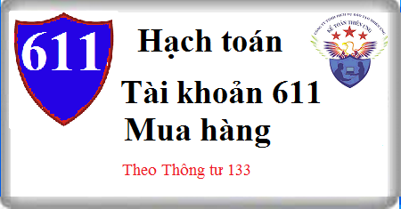

Hướng dẫn cách hạch toán Tài khoản 611 theo thông tư 133, Cách hạch toán Mua hàng, giá trị hàng hóa, Công cụ dụng cu, Nguyên vật liệu theo phương pháp kiểm kê định kỳ.
1. Nguyên tắc kế toán Tài khoản 611 - Mua hàng
a) Tài khoản này dùng để phản ánh trị giá nguyên liệu, vật liệu, công cụ, dụng cụ, hàng hóa mua vào, nhập kho hoặc đưa vào sử dụng trong kỳ. Tài khoản 611 "Mua hàng" chỉ áp dụng đối với doanh nghiệp kế toán hàng tồn kho theo phương pháp kiểm kê định kỳ.
b) Giá trị nguyên liệu, vật liệu, công cụ, dụng cụ, hàng hóa mua vào phản ánh trên tài khoản 611 "Mua hàng" phải thực hiện theo nguyên tắc giá gốc.
c) Trường hợp hạch toán hàng tồn kho theo phương pháp kiểm kê định kỳ, doanh nghiệp phải tổ chức kiểm kê hàng tồn kho để xác định số lượng và giá trị của từng nguyên liệu, vật liệu, hàng hóa, sản phẩm, công cụ, dụng cụ tồn kho tại thời điểm cuối kỳ kế toán để xác định giá trị hàng tồn kho xuất vào sử dụng và xuất bán trong kỳ.
d) Phương pháp hạch toán hàng tồn kho theo phương pháp kiểm kê định kỳ: Khi mua nguyên liệu, vật liệu, công cụ, dụng cụ, hàng hóa, căn cứ vào hóa đơn mua hàng, Hóa đơn vận chuyển, phiếu nhập kho, thông báo thuế nhập khẩu phải nộp (hoặc biên lai thu thuế nhập khẩu,...) để ghi nhận giá gốc hàng mua vào tài khoản 611 "Mua hàng". Khi xuất sử dụng, hoặc xuất bán chỉ ghi một lần vào cuối kỳ kế toán căn cứ vào kết quả kiểm kê.
đ) Kế toán phải mở sổ chi tiết để hạch toán giá gốc hàng tồn kho mua vào theo từng thứ nguyên liệu, vật liệu, công cụ, dụng cụ, hàng hóa.
2. Kết cấu và nội dung Tài khoản 611 - Mua hàng
Bên Nợ:
- Kết chuyển giá gốc hàng hóa, nguyên liệu, vật liệu, công cụ, dụng cụ tồn kho đầu kỳ (theo kết quả kiểm kê);
- Giá gốc hàng hóa, nguyên liệu, vật liệu, công cụ, dụng cụ, mua vào trong kỳ.
Bên Có:
- Kết chuyển giá gốc hàng hóa, nguyên liệu, vật liệu, công cụ, dụng cụ tồn kho cuối kỳ (theo kết quả kiểm kê);
- Giá gốc hàng hóa, nguyên liệu, vật liệu, công cụ, dụng cụ xuất sử dụng trong kỳ hoặc giá gốc hàng hóa xuất bán và hàng hóa gửi đi bán (chưa được xác định là đã bán trong kỳ);
- Giá gốc nguyên liệu, vật liệu, công cụ, dụng cụ, hàng hóa mua vào trả lại cho người bán hoặc được giảm giá.
Tài khoản 611 không có số dư cuối kỳ.
3. Cách hạch toán Mua hàng Tài khoản 611
a) Đối với doanh nghiệp sản xuất công nghiệp, nông nghiệp, lâm nghiệp, xây lắp
- Đầu kỳ kế toán, kết chuyển trị giá nguyên liệu, vật liệu, công cụ, dụng cụ tồn kho đầu kỳ (theo kết quả kiểm kê cuối kỳ trước), ghi:
Nợ TK 611 - Mua hàng
Có TK 152 Nguyên liệu, vật liệu
Có TK 153 Công cụ, dụng cụ
- Khi mua nguyên liệu, vật liệu, công cụ, dụng cụ, ghi:
Nợ TK 611 - Mua hàng (giá mua chưa có thuế GTGT)
Nợ TK 133 - Thuế GTGT được khấu trừ
Có TK 331 - Phải trả cho người bán (3311).
- Khi thanh toán tiền mua hàng, nếu được hưởng chiết khấu thanh toán, ghi:
Nợ TK 331 - Phải trả cho người bán
Có các TK 111, 112,...
Có TK 515 - Doanh thu hoạt động tài chính (chiết khấu thanh toán).
- Trường hợp doanh nghiệp mua nguyên liệu, vật liệu, công cụ, dụng cụ không đúng quy cách, chủng loại, phẩm chất ghi trong hợp đồng kinh tế, hoặc cam kết phải trả lại cho người bán, hoặc được giảm giá:
+ Căn cứ vào trị giá hàng mua đã trả lại cho người bán, ghi:
Nợ các TK 111, 112 (nếu thu ngay bằng tiền)
Nợ TK 331 - Phải trả cho người bán (trừ vào số nợ còn phải trả người bán)
Có TK 611 - Mua hàng (trị giá NVL, công cụ, dụng cụ đã trả lại người bán)
Có TK 133 - Thuế GTGT được khấu trừ (1331) (nếu có).
+ Nếu doanh nghiệp chấp nhận khoản giảm giá hàng của lô hàng đã mua, số tiền được giảm giá, ghi:
Nợ các TK 111, 112 (nếu thu ngay bằng tiền)
Nợ TK 331 - Phải trả cho người bán (trừ vào số nợ còn phải trả người bán)
Có TK 611 - Mua hàng (khoản giảm giá được chấp thuận)
Có TK 133 - Thuế GTGT được khấu trừ (nếu có).
- Cuối kỳ kế toán, căn cứ vào kết quả kiểm kê thực tế, kế toán phải xác định trị giá thực tế nguyên liệu, vật liệu tồn kho cuối kỳ và trị giá thực tế nguyên liệu, vật liệu, công cụ, dụng cụ xuất vào sử dụng hoặc xuất bán.
+ Kết chuyển trị giá thực tế nguyên liệu, vật liệu, công cụ tồn kho cuối kỳ (theo kết quả kiểm kê), ghi:
Nợ TK 152 - Nguyên liệu, vật liệu
Nợ TK 153 - Công cụ, dụng cụ
Có TK 611 - Mua hàng .
+ Trị giá thực tế nguyên liệu, vật liệu, công cụ, dụng cụ xuất sử dụng cho sản xuất, kinh doanh trong kỳ, ghi:
Nợ các Tài khoản 642, 241, 631...
Có TK 611 - Mua hàng .
+ Trị giá thực tế nguyên liệu, vật liệu, công cụ, dụng cụ thiếu hụt, mất mát, căn cứ vào biên bản xác định thiếu hụt, mất mát chờ xử lý, ghi:
Nợ TK 138 Phải thu khác (1381)
Có TK 611 - Mua hàng
b) Đối với doanh nghiệp kinh doanh hàng hoá
- Đầu kỳ kế toán, kết chuyển giá trị hàng hoá tồn kho đầu kỳ, ghi:
Nợ TK 611 - Mua hàng
Có TK 156 Hàng hoá.
- Trong kỳ kế toán, khi mua hàng hoá nếu được khấu trừ thuế GTGT đầu vào, căn cứ vào hoá đơn và các chứng từ mua hàng:
+ Trị giá thực tế hàng hoá mua vào, ghi:
Nợ TK 611 - Mua hàng (6112)
Nợ TK 133 - Thuế GTGT được khấu trừ (1331) (nếu có)
Có các TK 111, 112, 141; hoặc
Có TK 331 - Phải trả cho người bán (tổng giá thanh toán).
+ Chi phí mua hàng thực tế phát sinh, ghi:
Nợ TK 611 - Mua hàng
Nợ TK 133 - Thuế GTGT được khấu trừ (1331) (nếu có)
Có các TK 111, 112, 141, 331,...
+ Khi thanh toán trước hạn, nếu doanh nghiệp được nhận khoản chiết khấu thanh toán trên lô hàng đã mua, ghi:
Nợ TK 331 - Phải trả cho người bán (khấu trừ vào nợ phải trả người bán)
Có các Tài khoản 111, 112,...
Có TK 515 - Doanh thu hoạt động tài chính.
+ Trị giá hàng hoá trả lại cho người bán, ghi:
Nợ các TK 111, 112 (nếu thu ngay bằng tiền)
Nợ TK 331 - Phải trả cho người bán (khấu trừ vào nợ phải trả người bán)
Có TK 611 - Mua hàng (trị giá hàng hoá trả lại người bán)
Có TK 133 - Thuế GTGT được khấu trừ (1331) (nếu có).
+ Khoản giảm giá hàng mua được người bán chấp thuận do hàng hoá không đúng phẩm chất, quy cách theo hợp đồng, ghi:
Nợ các TK 111, 112 (nếu thu ngay bằng tiền)
Nợ TK 331 - Phải trả cho người bán (khấu trừ vào nợ phải trả người bán)
Có TK 611 - Mua hàng
Có TK 133 - Thuế GTGT được khấu trừ (1331) (nếu có).
- Cuối kỳ kế toán, căn cứ vào kết quả kiểm kê thực tế tính, xác định trị giá hàng tồn kho, trị giá hàng hoá đã gửi bán nhưng chưa xác định là đã bán, trị giá hàng hoá xác định là đã bán:
+ Kết chuyển trị giá hàng hoá tồn kho và hàng gửi đi bán cuối kỳ, ghi:
Nợ TK 156 - Hàng hoá
Nợ TK 157 Hàng gửi đi bán
Có TK 611 - Mua hàng.
+ Kết chuyển giá vốn hàng bán, ghi:
Nợ TK 632 - Giá vốn hàng bán
Có TK 611 - Mua hàng
Chúc bạn thành công!
